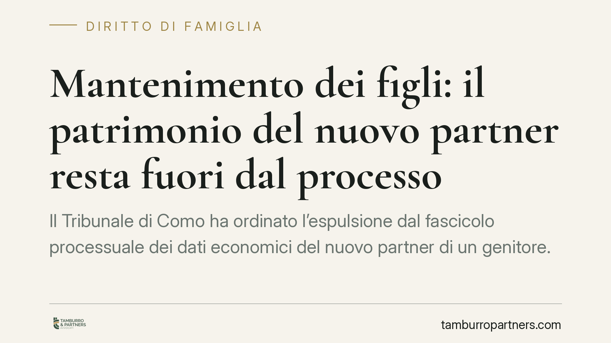

Mantenimento dei figli: il patrimonio del nuovo partner resta fuori dal processo
Il Tribunale di Como ha ordinato l'espulsione dal fascicolo processuale dei dati economici del nuovo partner di un genitore. Nelle cause sul mantenimento dei figli, il patrimonio del terzo estraneo all'unione resta intoccabile, salvo presupposti concreti. Una pronuncia che fissa un confine netto tra obbligo genitoriale e sfera patrimoniale di chi non è parte del rapporto.

Il caso
Nel corso di una causa sul mantenimento dei figli, una delle parti aveva prodotto in giudizio documenti relativi alla situazione patrimoniale del nuovo partner dell'altro genitore, un soggetto del tutto estraneo all'unione da cui erano nati i figli.
Il Tribunale di Como ha disposto l'espulsione di quei dati dal fascicolo processuale. La motivazione è lineare: il patrimonio di chi non è né genitore né obbligato non può diventare materiale di prova, tantomeno parametro per quantificare l'assegno dovuto ai minori.
Inquadramento normativo
L'obbligo di mantenimento dei figli ha fonte nell'articolo 315-bis del Codice civile e, per i figli minori, negli articoli 316-bis e 337-ter c.c., che ancorano il contributo alle sostanze e alla capacità di lavoro di ciascun genitore. Il riferimento normativo è preciso: l'obbligazione grava sui genitori, non su terzi.
Il nuovo partner, pur convivendo con uno dei genitori, non assume alcun obbligo giuridico di mantenimento verso i figli altrui. La sua condizione economica può incidere, al più, in via indiretta e di fatto: ad esempio, se la convivenza riduce le spese del genitore obbligato, migliorandone la capacità contributiva. Ma si tratta di un riflesso sul patrimonio del genitore, non di un'autonoma rilevanza del patrimonio del terzo.
Sul versante della riservatezza, l'acquisizione indiscriminata di dati economici di un soggetto estraneo al processo confligge con i principi di minimizzazione e pertinenza sanciti dal Regolamento UE 2016/679 (GDPR) e richiamati più volte dal Garante per la protezione dei dati personali. Un dato è trattabile nel processo solo se rilevante e necessario rispetto all'oggetto della causa.
Perché la pronuncia conta
La decisione segna un confine spesso trascurato nel contenzioso familiare. Nelle separazioni e nei giudizi sul mantenimento è frequente che una parte tenti di ricostruire il tenore di vita dell'altra puntando sulla ricchezza del nuovo compagno o della nuova compagna.
Il Tribunale di Como chiarisce che questa strategia non ha fondamento. Il parametro resta la capacità economica del genitore, non quella di chi gli sta accanto. Il patrimonio del terzo diventa rilevante solo in presenza di presupposti concreti: ad esempio, intestazioni fittizie, trasferimenti sospetti o operazioni dirette a occultare le reali disponibilità del genitore obbligato.
In assenza di questi elementi, produrre i dati del nuovo partner non solo è inefficace, ma espone a una violazione della riservatezza di un soggetto che non ha scelto di entrare nel processo.
Implicazioni pratiche
Per chi affronta una causa di mantenimento, il messaggio è duplice.
Da un lato, chi intenda allegare la ricchezza del nuovo partner dell'ex deve sapere che la prova non regge se non si dimostra un collegamento concreto con la situazione economica del genitore obbligato. Le mere deduzioni sul tenore di vita della nuova coppia non spostano il quadro.
Dall'altro, chi veda prodotti in giudizio dati del proprio compagno o compagna può chiederne l'espunzione, invocando sia i principi civilistici sia la normativa sulla protezione dei dati. Il terzo estraneo ha diritto a non vedere esposte le proprie informazioni economiche in un contenzioso che non lo riguarda.
Cosa fare in concreto
- Documentate la capacità economica del genitore, non quella del suo nuovo partner: è l'unico parametro su cui il giudice può legittimamente fondare l'assegno.
- Se sospettate intestazioni fittizie o occultamenti, raccogliete elementi concreti (visure, flussi bancari, atti di trasferimento) prima di coinvolgere il terzo: senza presupposti specifici, la produzione è destinata all'espunzione.
- Se i vostri dati o quelli del vostro partner vengono prodotti senza fondamento, chiedete formalmente al giudice l'espulsione dal fascicolo, richiamando i principi di pertinenza e minimizzazione.
- Valutate il rischio sanzionatorio: trattare dati di un terzo oltre i limiti di necessità può configurare una violazione segnalabile al Garante.
- Consigliamo di definire con il vostro difensore, già in fase di impostazione della causa, quali documenti siano effettivamente pertinenti, evitando produzioni inutili e controproducenti.
Disclaimer
Contributo informativo a cura di Tamburro & Partners - Avv. Giuseppe Tamburro. Non costituisce parere legale.
Ogni famiglia ha il suo equilibrio.
Separazione, divorzio, affidamento, assegno: se vuoi un confronto riservato su una specifica situazione, scrivi allo studio. Ti rispondiamo entro un giorno lavorativo.